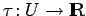

Inhalt Index DeskTop Bronstein

 Dynamische Systeme und Chaos Gewöhnliche Differentialgleichungen und Abbildungen Qualitative Theorie gewöhnlicher Differentialgleichungen Poincaré-Abbildung
Dynamische Systeme und Chaos Gewöhnliche Differentialgleichungen und Abbildungen Qualitative Theorie gewöhnlicher Differentialgleichungen Poincaré-Abbildung


Sei ein T-periodischer Orbit von (17.1) und eine (n-1)-dimensionale glatte Hyperfläche, die in x0 den Orbit  transversal schneidet (s. linke Abbildung).
transversal schneidet (s. linke Abbildung).
Dann gibt es eine Umgebung U von x0 und eine glatte Funktion  mit und für alle . Die Abbildung mit heißt POINCARÉ-Abbildung für  in
in  . Ist die rechte Seite f von (17.1) r-mal stetig differenzierbar, so ist P ebenfalls so oft differenzierbar. Die Eigenwerte der JACOBI-Matrix DP(x0) sind die Multiplikatoren des periodischen Orbits, hängen also nicht von der Wahl des x0 auf
. Ist die rechte Seite f von (17.1) r-mal stetig differenzierbar, so ist P ebenfalls so oft differenzierbar. Die Eigenwerte der JACOBI-Matrix DP(x0) sind die Multiplikatoren des periodischen Orbits, hängen also nicht von der Wahl des x0 auf  und der Wahl der transversalen Fläche ab. Der POINCARÉ-Abbildung kann ein System (17.3) in M =U zugeordnet werden, das erklärt ist, solange die Bildpunkte in U bleiben. Den Ruhelagen dieses zeitdiskreten Systems entsprechen periodische Orbits von (17.1), und der Stabilität dieser Ruhelagen entspricht die Stabilität der periodischen Orbits von (17.1).
und der Wahl der transversalen Fläche ab. Der POINCARÉ-Abbildung kann ein System (17.3) in M =U zugeordnet werden, das erklärt ist, solange die Bildpunkte in U bleiben. Den Ruhelagen dieses zeitdiskreten Systems entsprechen periodische Orbits von (17.1), und der Stabilität dieser Ruhelagen entspricht die Stabilität der periodischen Orbits von (17.1).
| Beispiel |
|
Für das System (17.9a) wird in Polarkoordinaten die transversale Hyperebene |